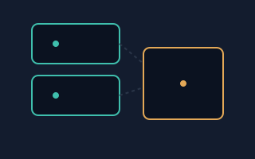
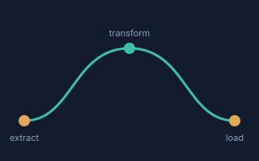
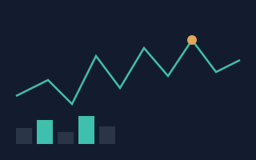

Projects
How data actually gets from a log line to a decision
Three stages of the same underlying pipeline, each pulled out and described on its own.
Containerized ML microservices
Trained models are only useful once something can call them reliably. I packaged models as independent Docker containers, each exposing a small, versioned API, so a new model version could be deployed without redeploying anything else in the system.


ETL pipelines
Before a model ever sees a row of data, it has usually passed through an extract-transform-load job that pulls records from upstream systems, cleans and reshapes them, and lands them somewhere a training script can read. I built and maintained these jobs so the data feeding our models stayed consistent as upstream sources changed.
Production ML observability
Shipping a model is the easy part; knowing when it quietly stops working is the hard part. I added monitoring that tracked prediction drift, input distribution shifts, and latency, and wired alerts into the same CI/CD pipeline used to deploy the models in the first place.
